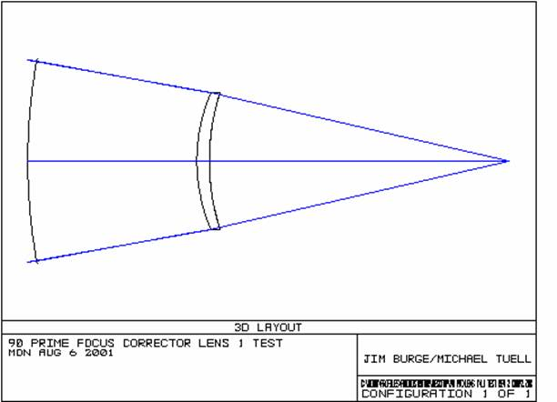
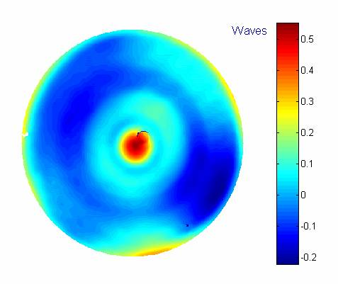

90-Inch Prime Focus
Corrector
Michael Tuell - Optical
This report details the test methods and results for lens 1 of the 90PFC system. It was found to not quite meet specifications in a transmission test configuration.
|
Abstract Summary Appendix A: System vs. lens tolerances Appendix B: Testing system tolerance analysis Appendix C: Testing system alignment procedures Appendix D: Test results Appendix E: Testing system photographs Appendix F: Testing system Zemax analysis |
1 2 4 5 8 9 11 14 |
Lens 1 for the 90PFC is an approximately 20” diameter meniscus lens made of fused silica. It was tested in double-pass transmission mode with a spherical return mirror. Figure 1 shows the test system layout. The distance from the interferometer focus (at the right side of the figure) to the vertex of the return sphere was 1.726 meters. An f/1.5 transmission sphere was used as the reference in the interferometer.

Figure 1
A laser-based Fizeau phase-stepping interferometer was used at 632.8 nm.
The return sphere was measured and subtracted from the transmitted wavefront map. The lens was measured to be 0.1085 waves rms and has an average slope of 0.0276 waves/cm, whereas from the lens specification, the tolerance is 0.0266 waves/cm.

Figure 2 final wavefront map
Figure 2 shows the final transmitted wavefront over a 480 mm aperture after subtraction of the return sphere, median filtering and a small amount of slope clipping.
The outside diameter of the optic was measured to be 520 mm and the optic weighs about 37 pounds.
The test tolerances show that the rms error could be 0.0093 waves, which is much smaller than the reported error, implying that this data is not swamped out by errors inherent in the test and/or alignment.
By
inspecting the system tolerance budget in Jim Burge’s system tolerancing report
from
System Parameter RMS spot radius (mm)
|
Surface 1 |
0.001089 |
|
Surface 2 |
0.000757 |
|
Index homogeneity |
0.001027 |
|
|
0.001677 |
Table A1
The PFC specifications are given in terms of rms spot radius, whereas the lens measurements are in terms of rms slope. A conversion factor, derived from the physics of the situation, of 0.063 gives an rms slope of 0.0266 waves/cm.
In order to model the opto-mechanical tolerances for the test system, Zemax was used to individually perturb system element locations. The rms wavefront changes from each perturbation were then added together by the root sum square method. Each part of the system was carefully measured and the measurement tolerance was used to perturb the system. For example, the distance between the lens and the return sphere was perturbed, introducing spherical aberration. The system (focus) was re-optimized for this new spacing and the rms difference was recorded.
To optimize the system in Zemax, the merit function defines the real lateral ray height to be zero at the focus of the interferometer, with further constraints on the best wavefront. The location of focus was given much more weight than the wavefront shape. To optimize a system, there must be variables for Zemax to change. In this case, the variables were the following items: the longitudinal position of lens 1 (for focus control) and the tip/tilt of the return sphere.
Even with no perturbations in the system, it was still not perfect. In fact, the rms wavefront error was 0.005313 waves. To find the additional rms error introduced by perturbation of a system element, we need to take the rms error reported squared minus the square of the unperturbed rms error and then take the square root of that. This is simply root sum square in reverse.
Table B1 shows the rms error and change from the unperturbed case for each system parameter. All of the perturbations are “as measured” values of alignment tolerances. Each system parameter can only be measured/aligned to within a certain tolerance. These values are those tolerances for the specific metrology or alignment technique used. Each parameter was calculated for both “+” and “–“ directions. If the two errors were different, only the largest one is reported.
Figure B1 is a bar chart showing the relative increase for each perturbation (in rms waves.) The x-axis is the index number listed in Table B1. In all cases, the larger of the two rms errors (either “+” the tolerance or “–“ the tolerance) was chosen for the graph and included in the root sum square calculation of the total error budget.
By taking the root sum square of the additional rms values, we find a total of 0.00744 waves rms. This value is well below the target tolerance of 0.0926 waves rms, which means that if these tolerances are held, the data obtained will be useful in determining if the test lens is within its tolerance budget.
|
Element |
Index |
|
RMS (waves) |
Additional RMS |
|
|
|
Unperturbed |
0.005313 |
0.0053130 |
|
|
|
|
|
|
|
Lens placement |
1 |
Z -0.25 mm |
0.009090 |
0.0073756 |
|
|
|
|
|
|
|
LENS 3 |
2 |
Theta x +0.02° |
0.005569 |
0.0016691 |
|
|
|
|
|
|
|
|
3 |
Y +0.3 mm |
0.005419 |
0.0010666 |
|
|
|
|
|
|
|
|
|
|
|
0.009303 |
Table B1